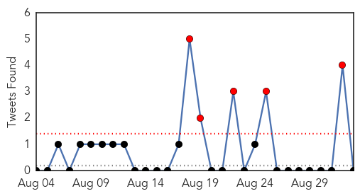
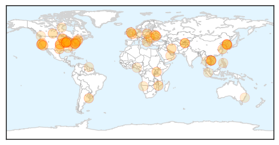

Hepatitis
30-Day Web Trend
0 alerts, 0 warnings

30-Day Twitter Trend
0 alerts, 0 warnings

Article Locations


Article Confidences

Top Articles:
- 0.992
- News Scan for Sep 02, 2015
- 0.957
- Hepatitis B cases rise in Dehradun, doctors fear epidemic in future
- 0.776
- Summit Focuses on 400 Million with Hepatitis
- 0.727
- Putting an end to global health's 'silent killer'
- 0.659
- World Hepatitis Summit harnesses global momentum to eliminate viral hepatitis
- 0.655
- World Hepatitis Summit harnesses global momentum to eliminate viral hepatitis - World
- 0.601
- Glasgow to host first world hepatitis summit
- 0.598
- World Hepatitis Summit harnesses global momentum to eliminate viral hepatitis
- 0.555
- Costly Hepatitis C Drugs for Everyone?
- 0.501
- Are Statins Bad For Me? Personalized Medicine Can't Yet Say
Top Tweets:
-
No tweets found for Sep 02, 2015
Unknown
30-Day Web Trend
0 alerts, 5 warnings

30-Day Twitter Trend
5 alerts, 0 warnings

Article Locations

Article Confidences

Top Articles:
- 0.999
- Flu preparations: Season should be milder, and the vaccine more effective
- 0.983
- Why typhoid is still a problem in Kampala
- 0.981
- The San Quentin Legionnaires’ Disease Outbreak, Explained
- 0.952
- 4th Legionnaires’ disease death at Illinois veterans’ home
- 0.950
- 8 now dead from Legionnaires' disease in western Illinois
- 0.940
- Ukraine outbreak brings polio back to Europe, WHO says
- 0.936
- Cases of Legionnaires' disease increases, confirmed outside vete
- 0.936
- MAPPED: Where in the world can you still catch the plague?
- 0.935
- Ukraine outbreak brings polio back to Europe, WHO says
- 0.934
- Bats testing positive for rabies near Saskatoon
- 0.932
- S. Korea to enhance monitoring, quarantine facilities to combat contagious outbreaks
- 0.929
- 8 Dead from Legionnaires’ Disease at Quincy Veterans’ Home « CBS St. Louis
- 0.923
- Mozambique reveals plans to battle rotavirus and trachoma
- 0.917
- San Quentin Prison Scrambles After Outbreak of Legionnaires’ Disease
- 0.917
- Chicago Tribune
- 0.917
- Chicago Tribune
- 0.917
- Chicago Tribune
- 0.917
- Chicago Tribune
- 0.917
- Chicago Tribune
- 0.917
- Chicago Tribune
- 0.917
- Chicago Tribune
- 0.912
- Ukraine Outbreak Brings Polio Back To Europe, WHO Says
- 0.900
- Circulating Vaccine-Derived Poliovirus is Confirmed in Ukraine
- 0.899
- Ukraine Reports Polio Outbreak, First Cases in Europe Since 2010
- 0.895
- East Texas health officials prepare for flu season - KTRE.com
- 0.891
- Faulty post-MERS steps
- 0.889
- Samsung hospital to invest W100b in post-MERS improvements
- 0.889
- 7 dead from Legionnaires' disease at Quincy veterans home
- 0.866
- Syphilis on the rise in Butte County
- 0.856
- Ukraine reports polio outbreak, first cases in Europe since 2010: WHO
- 0.817
- Huntington’s disease prevention breakthrough? An interview with Professor Lesley Jones
- 0.817
- Town official concerned over initial state response to hot tub infections
- 0.813
- More people have died from an outbreak at the Illinois Veterans Home
- 0.793
- New Legionnaires' death reported in western Illinois - MyNorthwest
- 0.793
- New Legionnaires' death reported in western Illinois - MyNorthwest
- 0.789
- Digging deeper into Legionnaires' disease outbreak in Quincy: He
- 0.787
- Indiana investigating rash of HIV cases
- 0.772
- S.Korea's travel account posts largest deficit in 7 years on MERS aftermath - Xinhua
- 0.763
- Another person in Bulgaria’s Rila tests positive for brucellosis
- 0.742
- Polio outbreak in Ukraine, first cases in Europe since 2010
- 0.733
- How Chicken Pox Infection Could Affect Kansas City Royal Players
- 0.721
- A Vaccinated Man Has Been Emitting Virulent Polio for 28 Years – Phenomena
- 0.712
- 2 polio cases found in Ukraine, caused by mutated virus in vaccine
- 0.699
- Saudi- 232 Aramco injured discharged from hospital
- 0.695
- Brain-eating amoeba kills 14-year-old star athlete
- 0.656
- PlayStation 4 : Sony donne toutes les nouveautés de la mise à jour 3.0
- 0.649
- Sorry, deze pagina kon niet gevonden worden.
- 0.649
- Sorry, deze pagina kon niet gevonden worden.
- 0.643
- Cause of Mysterious, Fatal Brain Disease Linked to Mad Cow Disease-Like Proteins
- 0.634
- Cause Of Multiple System Atrophy Identified, Making MSA Newest Prion Disease In 50 Years
Showing top 50 articles...
Top Tweets:
-
No tweets found for Sep 02, 2015